에너지관리기사 (2005-03-06 기출문제)
1과목: 연소공학
1. 저압공기 분무식 버너의 장점을 틀리게 설명한 것은?
- 구조가 간단하여 취급이 간편하다.
- 공기압이 높으면 무화가 양호해진다.
- 점도가 낮은 중유도 연소할 수 있다.
- 연소때 버너의 화염은 가늘고 길다.
(정답률: 15%)

2. 순수한 탄소 1㎏을 이론공기량으로 완전 연소시켜서 나오는 연소가스량(㎏/㎏)은 얼마인가?
- 8.59
- 10.59
- 12.59
- 14.59
(정답률: 43%)
3. 기체연료가 다른 연료보다 과잉공기가 적게 드는 가장 큰 이유는?
- 착화가 용이하다.
- 착화 온도가 낮다.
- 열전도도가 크다.
- 확산으로 혼합이 용이하다.
(정답률: 88%)
4. 1Nm3 CH4 가스를 30% 과잉공기로 연소시킬 때 연소가스량은 몇 Nm3 인가?
- 2.38
- 13.36
- 23.18
- 82.31
(정답률: 37%)
5. 유효 굴뚝높이(He) 와 지표상의 최고농도(Cmax)와의 관계에 있어서 일반적으로 He가 2배가 될 때 Cmax는?
- 2배
- 4배
- 1/2배
- 1/4배
(정답률: 50%)
6. 아래와 같은 조성을 가진 액체 연료의 연소시 생성되는 이론 건연소가스량(Nm3)은?
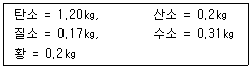
- 13.5
- 17.5
- 21.4
- 29.4
(정답률: 34%)
7. 로터리 버너를 사용하니 노벽에 카본이 많이 붙었다. 다음중 주된 원인은?
- 공기비가 너무 크다.
- 화염이 닿는 곳이 있다.
- 연소실 온도가 너무 높다.
- 중유의 예열 온도가 너무 높다.
(정답률: 85%)
8. 일산화탄소(CO) 1Nm3를 이론공기량으로 완전 연소시켰을 때의 연소가스량(Nm3)은?(오류 신고가 접수된 문제입니다. 반드시 정답과 해설을 확인하시기 바랍니다.)
- 1.8
- 2.9
- 3.4
- 4.2
(정답률: 19%)
9. CO2와 연료중의 탄소분을 알고 있을 때 건연소가스량(G')을 구하는 식은?
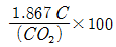
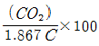
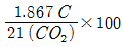
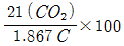
(정답률: 78%)
10. 고체 및 액체연료에서 연료중 수소(h : ㎏)와 수분(W : kg)이 연소에 의하여 발생하는 연소생성 수증기량은?
- 11.2h + 1.25W
- 1.4h + 1.12W
- 1.4h + 1.25W
- 11.2h + 1.12W
(정답률: 32%)
11. 완전연소를 위해서 연료별로 과잉공기가 많이 드는 순서로 배열한 것은?
- 고체연료 → 기체연료 → 액체연료
- 액체연료 → 고체연료 → 기체연료
- 액체연료 → 기체연료 → 고체연료
- 고체연료 → 액체연료 → 기체연료
(정답률: 75%)
12. 석탄의 분석결과 아래의 결과를 얻었다면 고정탄소분은 약 몇 % 인가?
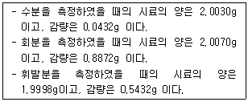
- 2.16%
- 26.47%
- 44.21%
- 53.17%
(정답률: 29%)
13. 가스 저장을 하기 위한 설비로서 원통형 또는 다각형의 외통과 그 내벽을 위, 아래로 유동하는 평판상의 피스톤, 저판 및 지붕판으로 구성되어 있는 홀더는?
- 유수식 홀더
- 무수식 홀더
- 고압 홀더
- 저압 홀더
(정답률: 23%)
14. 가열실의 이론 효율(E1)을 옳게 나타낸 식은? (단, tr : 이론연소온도, ti : 피열물의 온도)
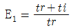
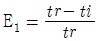
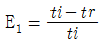
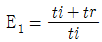
(정답률: 58%)
15. 수분을 함유하는 연소가스량(G")과 건연소가스량(G') 사이에는 아래와 같은 식이 성립한다. 여기서 X의 값은?
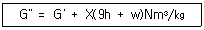
- 0.62
- 0.70
- 1.00
- 1.25
(정답률: 58%)
16. 연료의 저발열량이 1⑤00 ㎉/㎏인 중유를 사용하여 연료 소비율 200g/PSh로 운전하는 디젤엔진의 열효율(%)은?
- 30.11
- 32.55
- 38.53
- 46.51
(정답률: 24%)
17. 다음 식 중에서 틀린 것은?
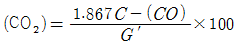
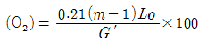
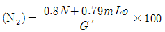
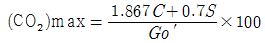
(정답률: 46%)
18. 아래의 무게조성을 가진 중유의 저발열량은?
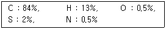
- 8600㎉/㎏
- 1⑤50㎉/㎏
- 13606㎉/㎏
- 17606㎉/㎏
(정답률: 56%)
19. 다음 중 건식집진장치가 아닌 것은?
- 사이클론(Cyclon)
- 백필터(Bag filter)
- 멀티클론(Multiclone)
- 사이클론 스크러버(Cyclon scrubber)
(정답률: 86%)
20. 화염(火炎)온도를 높이려고 할 때 틀린 조작은?
- 공기를 예열한다.
- 과잉공기를 사용한다.
- 연료를 완전히 연소시킨다.
- 로벽(爐壁) 등의 열손실을 막는다.
(정답률: 73%)
2과목: 열역학
21. Otto Cycle에서 압축비가 8일 때 열효율(%)은? (단, K = 1.4 이다.)
- 26.4
- 36.4
- 46.4
- 56.4
(정답률: 54%)
22. 10ata 0℃의 공기 15Nm3과 동일 압력으로서 100℃의 공기15Nm3와의 엔탈피 차는 몇 ㎉ 되겠는가? (단, 공기의 가스 정수는 29㎏.m/㎏.K, Cp는 0.24㎉/㎏℃로 한다.)
- 366㎉
- 466㎉
- 4658㎉
- 10440㎉
(정답률: 15%)
23. T-S 선도에서 그림과 같은 사이클은 어느 사이클인가? (단, 1-2, 3-4 과정에서는 일정 엔트로피이고, 2-3, 4-1 과정에서는 일정 압력이다.)
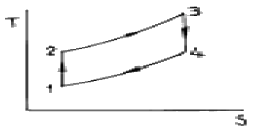
- 오토 싸이클
- 디젤 싸이클
- 가스터빈 싸이클
- 랭킨 싸이클
(정답률: 57%)
24. 공기가 일부분이 닫힌 밸브를 지닌 단열된 수평관을 일정한 속도로 흐른다. 밸브로 부터 상류의 상태는 30℃, 8atm이고 하류의 압력은 4atm이다. 밸브를 떠나는 관지름은 출구의 관지름 보다 충분히 커서 밸브를 통하여 흐르는 공기의 에너지 변화는 무시한다. 이 때 밸브로 부터 약간 아래의 공기 온도는 얼마인가? (단, 공기는 이상기체라고 본다.)
- 70℃
- 30℃
- 20℃
- 0℃
(정답률: 60%)
25. 대기압이 758[㎜Hg]일 때 보일러의 압력이 10.5[ata]였다. 이 증기의 포화온도는 얼마인가? (단, P = 11[ata]에서 ts = 183.20[℃], P = 12[ata]에서 ts = 187.08[℃]이다.)
- 187.08℃
- 115.30℃
- 185.26℃
- 183.21℃
(정답률: 50%)
26. 25℃에서 다음 반응의 정압 반응열은 326.7㎉이다. 같은 온도에서 정적 반응열[㎉]은 얼마인가?
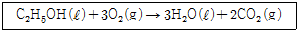
- 304.7
- 326.1
- 347.3
- 378.7
(정답률: 45%)
27. 이상기체에 대한 설명이다. 틀린 것은?
- 분자와 분자사이의 거리가 무한대다.
- 분자사이의 인력이 없다.
- 압축인자가 1 이다.
- 내부에너지는 온도와 무관하고 압력과 부피의 함수로 이루어진다.
(정답률: 69%)
28. 그림에서 임계점 이하 증기가 van der Waals의 식을 만족하는 온도 일정의 곡선은?
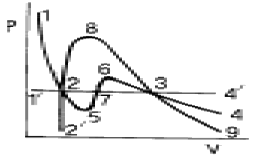
- 12734
- 1'2734'
- 1257634
- 1'257634'
(정답률: 58%)
29. 아래 내용과 관계있는 법칙은?
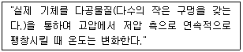
- 주울의 법칙
- 샤를(샬)의 법칙
- 돌턴의 법칙
- 주울·톰슨의 법칙
(정답률: 84%)
30. 냉장고가 저온체에서 300㎉/h의 비율로 열을 흡수하여 고온체에서 400㎉/h의 비율로 열을 방출한다. 이 냉장고의 성능계수는?
- 4.0
- 3.0
- 2.0
- 5.0
(정답률: 75%)
31. 증기터빈에서 상태 1의 증기를 규정된 압력까지 단열팽창시켰다. 이 때에 증기터빈 출구에서의 증기 상태는 그림의 각각 2, 3, 4, 5였다. 어느 경우가 터빈의 효율이 가장 양호한가?
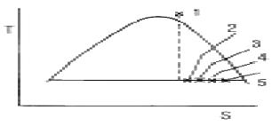
- 2
- 3
- 4
- 5
(정답률: 67%)
32. 그림의 PV선도에서 A→C의 등압과정 중 계는 50J의 일을 받아들이고 25J의 열을 방출하며, C→B의 등적과정 중75J의 열을 받아들인다면, B→A의 과정이 단열일 때 얼마의 일(J)을 방출하겠는가?
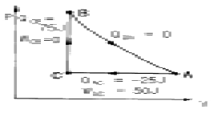
- 25J
- 50J
- 75J
- 100J
(정답률: 74%)
33. 100℃ 포화수의 증발 엔탈피는 538.8 ㎉/㎏ 이다. 이 때 100℃의 포화 증기와 포화수의 엔트로피의 차이는 약 얼마인가?
- 1.60 ㎉/㎏·k
- 1.44 ㎉/㎏·k
- 1.38 ㎉/㎏·k
- 1.22 ㎉/㎏·k
(정답률: 63%)
34. 그림과 같이 부피가 일정하고 완전 단열된 통기 속에 A, B 기체가 칸막이로 격리되어 있다. 초기상태는 VA = VB = 0.14 m3, PA = 17atm, PB = 10.2atm, tA = 338℃, tB = 282℃ 그리고 CVA = 0.335㎈/g.K, CVB = 0.157㎈/g.K이다. A속에 들어 있는 H2O의 량은?
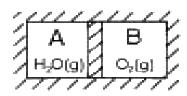
- 0.047 ㎏.mol
- 0.091 ㎏.mol
- 0.136 ㎏.mol
- 0.182 ㎏.mol
(정답률: 27%)
35. W = nRT ln(V2/V1)의 식은 이상기체의 밀폐계에 대한 압축 일을 나타낸다. 이 식이 적용될 수 있는 과정으로 다음 중 옳은 것은?
- 등온과정(isothermal process)
- 등압과정(constant pressure process)
- 단열과정(adiabatic process)
- 등적과정(constant volume process)
(정답률: 56%)
36. 다음 중 랭킨싸이클을 개선한 싸이클이 아닌 것은?
- 재열싸이클(Reheat cycle)
- 재생싸이클(Regenerative cycle)
- 추기싸이클(Bleeding cycle)
- 사바데싸이클(Sabathe's cycle)
(정답률: 74%)
37. 성능계수가 5.0, 압축일의 열당량이 56kcal/kg인 냉동기의 1냉동톤당 냉매의 순환량(kg/h)은?
- 5.46
- 11.86
- 23.72
- 30.54
(정답률: 40%)
38. 정압과정(constant pressure process)에서 한 계(system)에 전달된 열량은 그 계의 어떠한 성질 변화와 같은가?
- 내부에너지 변화
- 엔트로피 변화
- 엔탈피 변화
- 퓨개시티(fugacity)변화
(정답률: 67%)
39. 압력 10㎏/㎝2의 포화수가 증기트랩으로부터 압력760㎜Hg의 대기중으로 방출될 때 포화수 1㎏당 발생되는 증기의 양(㎏)은? (단, 이 압력에서 포화수 온도는 179℃)
- 2.928
- 0.147
- 1.726
- 3.115
(정답률: 16%)
40. 게이지압으로 10㎏/㎝2의 포화수증기가 등온 상태에서 압력이 7㎏/㎝2(게이지압)까지 내려갈 때 이 수증기의 상태는 다음 중 어떤 것인가?
- 과열수증기
- 습윤수증기
- 포화수증기
- 과포화수증기
(정답률: 55%)
3과목: 계측방법
41. 가스분석계에 대한 특징 설명 중 틀린 것은?
- 적정한 시료가스의 채취장치가 필요하다.
- 선택성에 대한 고려가 필요없다.
- 시료가스의 온도 및 압력의 변화로 측정오차를 유발할 우려가 있다.
- 계기의 교정에는 화학분석에 의해 검정된 표준시료 가스를 이용한다.
(정답률: 74%)
42. 광고온계를 써서 용융 철의 온도를 측정하는 경우 꼭 주의하여야 할 사항은?
- 거리계수에 주의
- 개인측정 오차에 주의
- CO2 및 H2에 의한 가스흡수의 영향에 주의
- 원격지시에 주의
(정답률: 67%)
43. 세라믹식 O2계의 특징을 설명한 것이다. 틀린 것은?
- 비교적 응답이 빠르며(5∼30초) 측정가스의 유량이나 설치장소의 주위온도 변화에 의한 영향이 적다.
- 주로 저농도가스 분석에 적합하다.
- 측정 범위도 ppm으로부터 %까지 광범위하게 측정할 수있다.
- 측정부의 온도유지를 위하여 온도조절 전기로를 필요로 한다.
(정답률: 44%)
44. 아래 부자식 면적유량계에 대한 통과 유량을 구하는 공식에서 Ａ는 무엇인가? (문제 오류로 문제 및 보기 내용이 정확하지 않습니다. 정확한 내용을 아시는 분께서는 오류신고를 통하여 내용 작성 부탁드립니다. 정답은 2번입니다.)
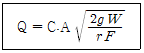
- 유량계수
- 부자와 테이퍼관과의 사이에 환상(環狀)틈새 면적
- 부자의 중량
- 부자전후의 압력
(정답률: 67%)
45. 분동식 압력계로 측정범위가 3000㎏/㎝2이상을 측정할 수있는 것에 사용되는 액체로 가장 적합한 것은?
- 경유
- 스핀들유
- 피마자, 마진유
- 모빌유
(정답률: 85%)
46. 다음 중 피토관(pitot tube)의 유속V(m/sec)를 구하는 식은? (단, Pt : 전압(㎏/m2), Ps : 정압(靜壓, ㎏/m2))
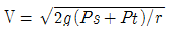
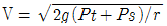
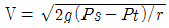
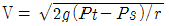
(정답률: 82%)
47. 브르돈 게이지(Bourdon Gauge)는 유체의 무엇을 측정하기위한 기기인가?
- 온도
- 압력
- 밀도
- 유량
(정답률: 60%)
48. 대류에 의한 열전달에 있어서의 경막 계수를 결정하기 위한 무차원 함수 중 유체의 흐름상태(난류, 층류)를 구별하는 것은?
- Grashof수
- Prandtl수
- Nusselt수
- Reynolds수
(정답률: 64%)
49. 자동제어 계에서 안정성의 척도가 되는 양은?
- 정상편차
- 오버슈트(overshoot)
- 지연시간
- 감쇠
(정답률: 84%)
50. 단요소식(單要素式) 수위제어에 대하여 서술한 것이다. 옳은 것은?
- 발전용 고압 대용량 Boiler의 수위제어에 사용된다.
- Boiler의 수위만을 검출하여 급수량을 조절하는 방식이다.
- 수위조절기의 제어동작에는 PID 동작이 채용된다.
- 부하 변동에 의한 수위의 변화 폭이 지극히 적다.
(정답률: 84%)
51. 자동제어의 동작순서로 맞는 것은?
- 비교 → 판단 → 조작 → 검출
- 검출 → 비교 → 판단 → 조작
- 조작 → 비교 → 검출 → 판단
- 판단 → 비교 → 검출 → 조작
(정답률: 알수없음)
52. 다음 설명 중에서 맞지 않는 것은?
- 광고온계는 측정거리 및 피측정체의 크기에 제약을 받지 않는다.
- 광고온계는 개인적인 측정오차를 수반할 수 있다.
- 방(복)사온도계는 700℃ 이상에서만 사용할 수 있다.
- 방(복)사온도계는 광고온계에 비하여 부정확하다.
(정답률: 53%)
53. 화씨(℉)와 섭씨(℃)의 눈금이 같게되는 온도는?
- 40°
- 20°
- -20°
- -40°
(정답률: 73%)
54. 온도계측기의 보호관은 다음의 조건을 구비하여야 한다. 틀리게 조건이 설명된 것은?
- 가스에 대하여 기밀성있고 유해가스에 대하여도 전혀 부식성이 없을 것
- 열에 대하여 불량도체이고 또한 단열재일 것
- 높은 온도에서 기계적으로 강하고 변형되지 않을 것
- 급격한 온도변화에도 잘 견딜 것
(정답률: 67%)
55. 내경이 50㎜인 원관에 20℃ 물이 흐르고 있다. 층류로 흐를 수 있는 최대 유량은 몇 m3/sec인가? (단, 20℃일 때 ν = 1.0064 × 10-6m2/sec이고, 레이놀즈(Re)수는 2,320 이다.)
- Q = 5.33 × 10-5
- Q = 7.33 × 10-5
- Q = 9.22 × 10-5
- Q = 15.23 × 110-5
(정답률: 36%)
56. 밀폐된 관에 수은 등과 같은 액체나 기체를 봉입한 것으로 온도에 따라 체적변화를 일으켜 관내에 생기는 압력의 변화를 이용하여 온도를 측정하는 방식이 아닌 것은?
- 차압식
- 기포식
- 부자식
- 액저압식
(정답률: 77%)
57. 다음 가스분석 방법 중 물성 정수를 이용한 것이 아닌 것은?
- 열전도율법
- 밀도법
- 세라믹법
- 가스크로마토 그래프법
(정답률: 34%)
58. 신호전송용 공기압은 몇 ㎏/㎝2이 적당한가?
- 0.01 ~ 0.1
- 0.1 ~ 0.2
- 0.2 ~ 0.5
- 0.2 ~ 1.0
(정답률: 50%)
59. 마노미터의 종류로는 open-end 마노미터, 차압 마노미터, sealed-end 마노미터 등이 있다. 한쪽 끝이 대기중에 개방 되어 있는 것은 open-end 마노메타, 한쪽 끝이 진공상태로 막혀 있는 것은 sealed-end 마노미터이며 공정흐름 선상에 두 지점의 압력차를 측정하는 것은 차압 마노미터이다. 이중 압력 계산시 유체의 밀도에는 무관하고 단지 마노미터액의 밀도에만 관계되는 마노미터는?
- open-end 마노미터
- sealed-end 마노미터
- 차압(differential) 마노미터
- open-end 마노미터와 sealed-end 마노미터
(정답률: 알수없음)
60. 제어결과가 그림과 같은 동작은?
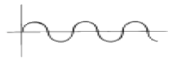
- ON - OFF동작
- 비례동작
- 적분동작
- 미분동작
(정답률: 82%)
4과목: 열설비재료 및 관계법규
61. 다음 중 회전가마(rotary kiln)에 관한 설명으로 적당하지 않은 것은?
- 일반적으로 시멘트, 석회석 등의 소성에 사용된다.
- 온도에 따라 소성대, 하소대, 예열대, 건조대 등으로 구분된다.
- 소성대에는 황산염이 함유된 클링커가 용융되어 내화벽 돌을 침식시킨다.
- 원료와 연소가스는 서로 반대방향으로 이동함으로써 열교환이 잘 일어난다.
(정답률: 46%)
62. 다음 로 중에서 연속가열 방식이 아닌 것은?
- 푸셔(pusher)식 가열로
- 워킹-빔(working beam)식 가열로
- 대차식 가열로
- 회전로상식 가열로
(정답률: 67%)
63. 배관재료 중 온도범위 0~100℃사이에서 온도변화에 의한 팽창계수가 가장 큰 것은?
- 동
- 주철
- 알루미늄
- 스테인리스강
(정답률: 43%)
64. SK 34는 몇 도까지 견딜 수 있는가?
- 1350℃
- 1580℃
- 1750℃
- 1930℃
(정답률: 72%)
65. 다음 중 열사용기자재 관리규칙에 의한 강철제 보일러에 속하는 것은?
- 소형 온수보일러
- 구멍탄용 온수보일러
- 금속으로 만든 것
- 축열식 전기보일러
(정답률: 32%)
66. 보온재의 구비조건에 가장 합당한 것은?
- 내화도가 커야 한다.
- 내화도가 작아야 한다.
- 열전도도가 커야 한다.
- 열전도도가 작아야 한다.
(정답률: 74%)
67. 검사대상 기기의 검사유효 기간 중 틀린 것은?
- 보일러의 재사용 검사는 1년이다.
- 압력용기의 설치검사는 2년이다.
- 용접 및 구조검사는 유효기간의 지정이 없다.
- 보일러의 개조검사는 2년이다.
(정답률: 36%)
68. 시·도지사는 지역에너지 계획을 몇 년마다 수립해야 하는 가?
- 3년
- 5년
- 7년
- 10년
(정답률: 75%)
69. 전기와 열의 양도체로서 내식성, 굴곡성이 우수하고 내압성도 있어 열교환기의 내관(tube) 및 화학공업용으로 많이 사용되는 관(pipe)은?
- 주철관
- 강관
- 알루미늄관
- 동관
(정답률: 91%)
70. 다음 중 밸브의 역할이 아닌 것은?
- 유체 흐름 단속
- 유체 방향 전환
- 유체 유량 조절
- 유체 속력 조절
(정답률: 알수없음)
71. 검사대상기기에 관한 내용 중 틀린 것은?
- 개조검사 중 연료 또는 연소방법의 변경에 따른 개조검사의 경우에는 검사유효기간을 적용치 아니한다.
- 검사대상기기 검사 수수료 산정에 있어 온수 보일러의 용량산정은 0.70MW를 1t/h으로 본다.
- 가스사용량이 17kg/h를 초과하는 가스용 소형온수보일러에서 면제되는 검사는 설치검사이다.
- 주철제 보일러에서 면제되는 검사는 구조, 용접검사이다.
(정답률: 57%)
72. 터널요의 3개 구조부에 속하지 않는 것은?
- 용융부
- 예열부
- 소성부
- 냉각부
(정답률: 40%)
73. 마그네시아질 내화물이 수증기에 의해서 소화되어 조직이 약화되는 현상은?
- 슬레킹(slaking) 현상
- 더스팅(dusting) 현상
- 침식 현상
- 스폴링(spalling) 현상
(정답률: 72%)
74. 주원료명에 따른 내화물의 분류 명은?
- 부정형내화물
- 전주내화물
- 규석내화물
- 산성내화물
(정답률: 60%)
75. 다음 설명 중 고알루미나질 내화물과 관계가 없는 것은?
- 알루미나가 50%이상을 포함하는 것을 말한다.
- 알루미나 함량이 많은 원료는 가소성이 크다.
- 하중 연화온도가 높다.
- 급열 급냉에 대한 저항성이 크다.
(정답률: 34%)
76. 다음 중 열전달계수의 단위를 바르게 나타낸 것은?
- ㎉/mh℃
- ㎉/m2h℃
- ㎉/h℃
- ㎉/m℃
(정답률: 69%)
77. 보온재의 열전도율에 관한 사항 중 옳은 것은?
- 열전도율 0.5kcal/mh℃ 이하를 기준으로 하고 있다.
- 재질내 수분이 많을 경우 열전도율은 감소한다.
- 비중이 클수록 열전도율은 작아진다.
- 밀도가 작을수록 열전도율은 작아진다.
(정답률: 50%)
78. 에너지 총 조사는 누가 실시하며, 몇 년 주기로 실시(간이 조사 제외)하는가?
- 산업자원부장관, 3년
- 대통령, 5년
- 지방자치단체장, 3년
- 에너지관리공단 이사장, 5년
(정답률: 알수없음)
79. 에너지사용의 제한 또는 금지에 대한 내용으로 틀린 것은?
- 에너지 사용시기 및 방법의 제한
- 에너지 사용시설 및 에너지사용기자재에 사용할 에너지의 지정 및 사용에너지의 전환
- 특정지역에 대한 에너지 사용의 제한
- 에너지 사용 설비에 관한 사항
(정답률: 34%)
80. 검사대상기기 검사 중 용접검사 면제 대상이 아닌 것은?
- 압력용기 중 동체의 두께가 8mm 미만으로서 최고사용압력(MPa)과 내용적(m3)을 곱한 수치가 0.02이하인 것
- 온수보일러로서 전열면적이 18m2 이하이고 최고사용압력이 0.35MPa 이하인 것
- 강철제 보일러로서 전열면적이 5m2 이하이고 최고사용압력이 0.35MPa 이하인 것
- 압력용기 중 전열교환식인 것으로 최고사용압력이 0.35MPa 이하이고 동체의 안지름이 600mm 이하인 것
(정답률: 8%)
5과목: 열설비설계
81. 1보일러 마력을 상당 증발량으로 환산하였을 때의 값은?
- 3.⑤㎏/h
- 15.65㎏/h
- 30.⑤㎏/h
- 34.55㎏/h
(정답률: 74%)
82. 다음 보일러에 대한 설명 중 옳은 것은?
- 온도가 120℃를 넘는 온수 보일러에는 안전밸브를 설치한다.
- 온도가 120℃를 넘는 온수 보일러에는 방출밸브를 설치해야 한다.
- 증기 보일러에는 4개 이상의 유리수면계를 부착한다.
- 보일러의 설치시 수위계의 최고눈금은 보일러 최고사용압력의 3배이상 5배 이하로 하여야 한다.
(정답률: 75%)
83. 다음 중 열전도율이 가장 낮은 재료는?
- 니켈
- 탄소강
- 스켈
- 끄으름
(정답률: 75%)
84. 관판의 롤확관 부착부에 있어서 완전한 고리(링)형을 이룬 접촉면의 최소 두께는 몇 ㎜이상이어야 하는가?
- 5
- 10
- 15
- 20
(정답률: 8%)
85. 외기 온도가 20℃일 때 표면온도 70℃의 관표면에서의 복사에 의한 열 전달율은 몇 kcal/m2·h·℃인가? (단, 흑도(복사율) = 0.8)
- 0.2
- 5.1
- 10.2
- 12.5
(정답률: 36%)
86. 급수온도 20[℃], 실제 증발량 1,800[㎏/h], 최고 사용압력 10[㎏/㎝2·g]인 보일러에서 상당 증발량[㎏/h]의 값은? (단, 10[㎏/㎝2·a]에서 수증기의 엔탈피는 663.7[kcal/㎏]이다.)
- 2014
- 1460
- 1210
- 2150
(정답률: 36%)
87. 완전 흑체의 복사력(Eb)은 상수(Cb)와 절대온도(T)와 어떤 관계식이 성립하는지 올바른 것은?
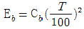
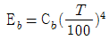
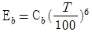
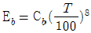
(정답률: 89%)
88. 양단을 고정한 길이 3m, 온도 20℃의 주철봉을 100℃까지 열을 가할때 생기는 열응력은 몇㎏/㎜2인가? (단, 종탄성계수 E = 1.0×104㎏/㎜2, 재료의 선팽창 계수 α = 0.000011℃-1이다.)
- 8.8
- 10.2
- 11.7
- 12.5
(정답률: 25%)
89. 다음의 보일러의 안전사고의 종류 중 해당되지 않는 것은?
- 노통, 수관, 연관 등의 파열 및 균열
- 보일러내의 스케일 부착
- 동체, 노통, 화실의 압궤 및 수관, 연관 등 전열면의 팽출
- 연도나 노내의 가스폭발, 역화, 그 외의 이상연소
(정답률: 83%)
90. 일반적으로 보일러에 사용되는 중화방청제(中和防淸劑)가 아닌 것은?
- 암모니아
- 히드라진
- 탄산나트륨
- 개미산나트륨
(정답률: 80%)
91. 보일러 급수중에 함유되어 있는 칼슘(Ca) 및 마그네슘(Mg)의 농도를 나타내는 척도는?
- 탁도
- 경도
- B.O.D
- 수소이온
(정답률: 93%)
92. 보일러에서 과열기의 역할은?
- 포화증기의 압력을 높인다.
- 포화증기의 온도를 높인다.
- 포화증기의 압력과 온도를 높인다.
- 포화증기의 압력은 낮추고 온도만을 높인다.
(정답률: 36%)
93. 3가지 서로 다른 고체 물질 A, B, C의 평판들이 서로 밀착 되어 복합체를 이루고 있다. 정상 상태에서의 온도 분포가 그림과 같다면 A. B. C.중 어느 물질이 열전도도가 가장 작은가?
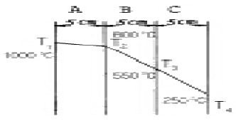
- A
- B
- C
- 판별이 곤란하다.
(정답률: 28%)
94. 다음 중 증기보일러 용량을 표시하는 것은?
- 단위시간당 증발량
- 화격자면적 x 본체전열면적
- 단위온도, 단위면적당의 증발량
- 보일러 본체의 접촉전열 면적
(정답률: 57%)
95. 증기 트랩으로서 가져야 할 조건이 아닌 것은?
- 압력 유량이 소정내에서 변화하지 않아야 한다.
- 슬립, 율동 부분이 적고 마모, 부식에 견뎌야 한다.
- 동작이 확실하고 내구력이 있어야 한다.
- 마찰 저항이 적고 공기 배기가 좋아야 한다.
(정답률: 50%)
96. 원통보일러에서 동체의 내경이 2300㎜라 할 때 동체의 최소 두께는 얼마 이상이어야 하는가?
- 6㎜
- 8㎜
- 10㎜
- 12㎜
(정답률: 60%)
97. 다음 중 보일러수로서 가장 알맞는 [pH]는?
- 5 전후
- 7 전후
- 11 전후
- 12 이상
(정답률: 74%)
98. 보일러 청소에 대한 사항을 설명한 것으로 부적당한 것은?
- 보일러의 냉각은 연화적(벽돌)이 있는 경우에는 24시간 이상 걸려야 한다.
- 보일러는 적어도 40℃ 이하까지 냉각한다.
- 부득이하게 냉각을 빨리시키고자 할 경우 찬물을 보내면서 취출하는 방법에 의해 압력을 저하시킨다.
- 압력이 남아 있는 동안 취출밸브를 열어서 보일러 물을 완전 배출한다.
(정답률: 59%)
99. 그림과 같이 내경과 외경이 Di, Do일 때 온도는 Ti, To, 관 길이가 L인 중공 원관이 있다. 관 재질에 대한 열전도 계수를 k라 할 때, 열전도저항을 알맞게 표현한 식은?
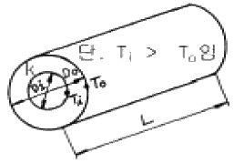
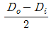
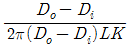
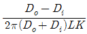
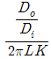
(정답률: 54%)
100. Shell & Tube 열교환기에 대한 설명으로 틀린 것은?
- 현장제작이 가능하여 좁은 공간에 설치가 가능하다.
- 플레이트 열교환기에 비해서 열통과율은 낮다.
- Shell과 Tube내의 흐름은 직류보다 향류흐름의 성능이 더 우수하다.
- 구조상 고온·고압에 견딜수 있어 석유화학공업 분야에서 많이 이용되고있다.
(정답률: 72%)